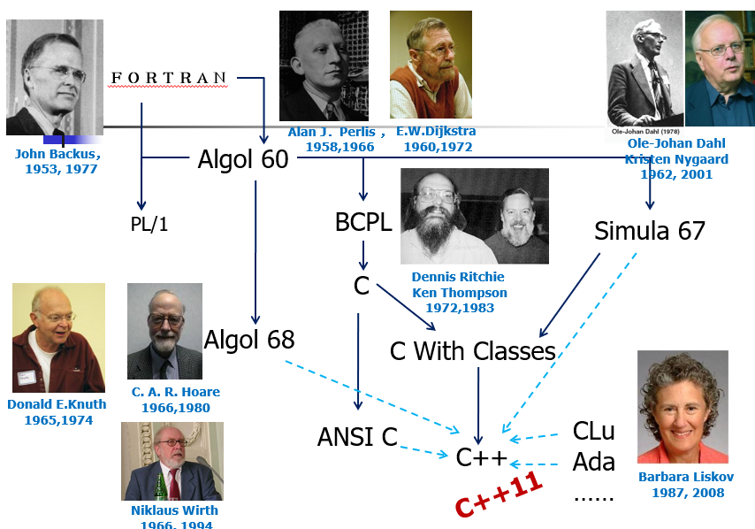
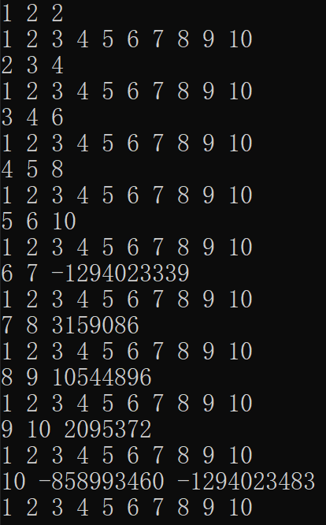
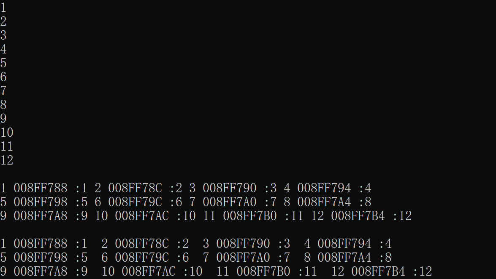

C++ Collection By YDJSIR
C++历史与理念

目的
更高效地进行编码
设计理念
- 效率；
- 实用性优于艺术性严谨性；
- 相信程序员允许一个有用的特征比防止各种错误使用更重要（相信程序员）；
重要人物
| 人 | 成就 | 备注 |
|---|---|---|
| Kristen Nygaard | Simula67 | 创建 |
| Ole-Johan Dahl | OO 编程 | 创建 |
| Dennis Ritchie、Ken Thompson | C语言 | 创建 |
| Bjarne Stroustrup | C with Classes | 1980形成，并最终发明C++ |
| Rick Mascitti | C++ | 1983正式命名 |
| Dijkstr | 结构化编程 | 创建 |
三条主要脉络
脉络一：Algol 68：结构化编程的部分的继承
Niklaus Wirth：发明了PASCAL，很适用于教学；C. A. R. Hoare；Donald E.Knuth：Dijkstra一同提出goto有害性；- 继承下来:关于结构化编程的特性；
脉络二：系统化编程的继承
- BCPL:贴近计算机，写出高效的程序，很好的想法：将IO作为类成分而不是语言成分，以提高语言可移植性；
- 在BCPL和C之间还有B语言，B语言是将BCPL里面的比较繁杂的部分取出；
Dennis Ritchie、Ken Thompson，compiler决定程序语义和性质；- 继承下来:关于系统编程的特性；
脉络三：Simula 67 第一个OO的研究(OO部分的继承)
- OO的第一个提出人：
Ole-Johan Dahl、Kristen Nygaard； - 继承下来:关于面向对象编程的特性；
Barbara Liskov：关于高层复用做出很大的贡献；
C与C++的关系
代码层面C++完全包含了C语言成分，支持C支持的全部编程技巧，C是建立C++的基础，同时C++还添加了OOP的完全支持。运行任何C程序都能被C++用基本相同的方法编写，并具有相同的运行效率和空间。功能C++还引入了重载、内联函数、异常处理等功能，对C中过程化控制及其功能并扩充。
为什么不叫D
因为并没有完全抛弃C中的很多东西。而且事实上的确有一门D语言，但是并没有什么人用。C与C++已经被无数应用所验证，仍具有顽强的生命力，将其全盘抛弃后新开一门语言是不划算的。
C++编译与链接过程
- C++源代码想通过cpp预处理后再通过Cfront翻译成C语言，最后通过C编译器来使程序运行。
- 用Cfront不用Cpre的原因：Cpre不懂C语法，Cfront懂，发现语法错误会传回source code，但Cpre将方言部分翻译成c后交给cc，此时若发现错误才传回source code。
C++语言特性
C++是强类型语言、动/静结合
类型安全不能代替测试。
- 弱类型允许隐式转换
- 动：编译时决定类型，静：编译前决定类型。
注解
对于char、int、float、double(四种基本数据类型)和修饰符(long、short、signed、unsigned):
- char只可以被signed和unsigned修饰
- float不能被修饰
- double只能用long修饰
- int可以被四种修饰符组合修饰
sizeof：返回字节为单位的对应单位的大小。
typedef：可以有效地提高系统的可移植性。
枚举常量
直接输出枚举常量，会在屏幕上显示对应的值，而不是枚举的名称，不能直接给枚举类赋一个int值，可以today = weekday(4),其中weekday是预定义好的枚举类。
运算符
自增量运算符
xxxxxxxxxx141int main() {2 int a = 1;3 int b, c, d, e;4 cout << a << endl;//1 a = 15 b = a++;6 cout << b << endl;//1 b = 1 a = 27 c = a--;8 cout << c << endl;//2 c = 2 a = 19 d = ++a;10 cout << d << endl;//2 d = 2 a = 211 e = --a;12 cout << e << endl;//1 e = 1 a = 113}14// 注意到++a返回的是左值，他自己，a++返回的是右值，返回的是还没有＋的值条件运算符:<exp1>?<exp2>:<exp3>
- 唯一的三目运算符,不允许进行重载
- 如果
<exp2>和<exp3>的值类型相同且均为左值，则该条件运算符表达式为左值表达式。 - 可以嵌套(满足就近原则)
逗号表达式
按照顺序，连续进行运算,格式形如：<exp1>,<exp2>,...,<expn>,<expn>的值是逗号表达式的值,如<exp n>为左值，则该逗号表达式为左值
xxxxxxxxxx51int a,b,c;2d = (a = 1,b = a + 2,c = b + 3)3//a = 14//b = 35//c = d = 6异或操作
- 与全0的二进制串进行运算：不变
- 与全1的二进制串进行运算：取反
- 与本身的运算：清零
- 与同一个对象进行异或运算两次：还原，应用:进行加密
补充：交换x和y
xxxxxxxxxx121//允许中间变量2int t = x;3x = y;4y = t5//不允许中间变量6a = a ^ b7b = b ^ a8a = a ^ b9//或者10x = x + y11y = x - y12x = x - y左值和右值
左值表达式
引用内存位置的表达式称为“左值”表达式，即具有可通过编程方式访问正在运行的程序的存储地址。 左值表示存储区域的“locator”值或“left”值，并暗示它可以出现在等号 ( = ) 的左侧。 左值通常是标识符。
引用可修改的位置的表达式称为“可修改的左值”。 可修改的左值不能具有数组类型、不完整类型或包含 const 特性的类型。 要使结构和联合成为可修改的左值，它们必须没有任何包含 const 特性的成员。 标识符的名称表示存储位置，而变量的值是存储在该位置的值。
以上内容来自微软文档
右值表达式
术语“右值”有时用于描述表达式的值以及将其与左值区分开来。
所有左值都是右值，但并不是所有右值都是左值。
C++11新引入了右值引用，在C++11部分再行展开。
常用关键字
this关键字：可以用来访问自己的地址。
static
- 全局有效：函数释放后也不会释放自身空间。
static的成员函数，需要在声明的时候进行修饰，但是没有this指针
const对象在对应声明周期中是常量
struct与union
union


多态初步

指针与数组
指针和内存处理
x
1//将从pointer开始的长度为size的内存全部清空2void memset (void *pointer, unsigned size) {3 char *p = (char *)pointer;4 for (int k=0;k<size;k++){5 *p++ = 0;6 }7}8//将src位置上和后面size长度的数据拷贝到des的位置上去9void memcpy(void *des, void *src, unsigned size) {10 char *sp = (char *)src;11 char *dp = (char *)des;12 for (int i = 0; i < size; i++) {13 *dp++ = *sp++;14 }15}16//查看从q开始的长度为nbit的数据17void showBytes(void *q, int n)//查看内存18{19 cout << n << endl;20 unsigned char *p = (unsigned char *)q;21 for (int i=0; i<n; i++){22 cout << (void *)(p+i) << " : "<< setw(2) << hex << (int)*(p+i) << " ";23 if ( (i+1) %4 ==0 ) cout << endl;24 }25 cout << dec << endl;26}智能指针
- 通过将一些需要的信息进行封装的方法，来保证不管出现什么异常，在退出相应操作部分时，自动调用对象的析构函数来保证不会出现内存泄漏的问题。
- 同样的还有句柄类(C++ 异常中有)
1template <class T>2class auto_ptr{3 public:4 auto_ptr(T *p=0):ptr(p) {}5 ~auto_ptr() { delete ptr; }6 T* operator->() const { return ptr;}7 T& operator *() const { return *ptr; }8 private:9 T* ptr;10};11//结合智慧指针使用12void processAdoptions(istream& dataSource){13 while (dataSource){14 auto_ptr<ALA> pa(readALA(dataSource));15 pa->processAdoption();//只要对象结束，就会自动delete16 }17}实例：GUI应用软件中的某个显示信息的函数
handle class：句柄类，就是处理智能指针
xxxxxxxxxx201void displayInfo(const Information& info){ 2 WINDOW_HANDLE w(createWindow());//针对windows窗体的一个指针，createWindow:返回一个窗体指针，WINDOW_HANDLE是别名3 display info in window corresponding to w;4 destroyWindows(w);5}6//专门的句柄类，处理窗体问题7class WindowHandle{8 public:9 WindowHandle(WINDOW_HANDLE handler) : w(handler) {}10 ~WindowHandle() { destroyWindow(w);}//析构就会自动释放资源11 operator WINDOW_HANDLE() { return w; }//重载类型转换操作符，转换为WINDOW_HANDLE指针，将句柄类对象和包含的句柄一样的进行使用12 private:13 WINDOW_HANDLE w;14 WindowHandle(const WindowHandle&);15 WindowHandle & operator = (const WindowHandle&);16};17void displayInfo(const Information& info){18 WindowHandle w(createWindow())19 //display info in window corresponding to w;20}函数指针
- 函数指针可以使得我们类似传递参数一样传递函数指针。
- 函数指针允许我们抽象一些操作，同时支持我们实现多态操作。
xxxxxxxxxx101//函数指针的定义，这个函数指针是参数为int的，返回值为double的函数指针。2typedef double (*FP)(int);3double *fp (int);4double f(int x){}5void main(){6 FP fp;7 fp = f; //相当于fp = &f;为函数指针赋值8 (*fp)(10);//相当于fp(10);9 fp = g; //Error10}Lambda表达式
语法:
[capture](parameters) mutable ->return-type{statement}capture：捕获列表parameters：参数列表->mutable：修饰符，可以取消lambda函数使其不是const函数，使用时参数列表不可省略(就算为空)return type:返回类型statement:函数体，可以使用参数和捕获变量
例子:
auto func = [=, &b](int c)->int {return b += a + c;};
指针和数组
一维数组
int *p = a,a代表数组的首地址。*(p+i):p的位置不移动。*(p++):p向前移动一个位置。sizeof(a):数组的大小。sizeof(a[0]):数组的元素的占地大小。几个等价操作:
a[i] == *(a+i)&a[i] == a+i
xxxxxxxxxx131int a[10] = { 1,2,3,4,5,6,7,8,9,10 };2int *p = &a[0];3for (int i = 0; i < 10; i++) {4 cout << *p++ << " ";//指针移动5 //等价于 cout << *(p++) << " "6 //不等价于 cout << (*p)++ << " ",这样指针不移动7 cout << *p << " ";8 cout << *(p + i) << endl;//指针不动9 for (int j = 0; j < 10; j++) {10 cout << a[j] << " ";11 }12 cout << endl;13}上面代码的结果如下，上图中为什么等价，是因为++的优先级高于，

二维数组
- 有一些操作相对于其组成部分(一维数组越界了，但是对于其本身没有越界)，也就是C++对于这一类越界是默许的，因为这块系统空间在我们的控制中。
int *p = &a[0][0]:访问二维数组中的T类型的变量
xxxxxxxxxx61int b[20][10];2int *q;3q = &b[0][0];//等价于 q = b[0]4//b[i][j] == *(&b[0][0] + i*10 + j) == *(q + i * 10 + j) == q[i*10 + j]5T *p;6p = &b[0];// p = b降维操作
使用线性方式来访问二维数组
升维操作
对于一维数组，建立逻辑视图，按照多维数组的方式进行访问，可以在传递参数的时候直接进行划分。
xxxxxxxxxx441void show(int a[], int n){2 for (int i=0;i<n;i++) {3 cout << a[i] << " ";4 cout << endl;5 }6 cout << endl;7}8void show(int a[][2], int n){9 for (int i=0;i<n;i++) 10 for (int j=0;j<2;j++) {11 cout << a[i][j] << " ";12 cout << *(a+i)+j << " :" << a[i][j] << " ";13 //四个换一行14 if ((i*2+j+1)%4 == 0)15 cout << endl;16 }17 cout << endl;18}19void show(int a[][2][3], int n){20 for (int i=0;i<n;i++) 21 for (int j=0;j<2;j++)22 for (int k=0;k<3;k++){23 cout << a[i][j][k] << " ";24 cout << *(*(a+i)+j)+k << " :" << a[i][j][k] << " ";25 //换行输出26 if ((i*6+j*3+k+1)%4 == 0)27 cout << endl;28 }29 cout << endl;30}3132void main(){33 int b[12];34 for (int i=0;i<12;i++) b[i] = i+1;35 show(b,12);36 //二维数组37 typedef int T[2];38 show((T*)b,6);//show((int (*)[2])b,6),一定有括号3940 //三维数组41 typedef int T1[3];42 typedef T1 T2[2];43 show((T2*)b,2);//show((int (*)[2][3])b,2)44}结果如下图

指针数组
main函数:
int main(int argc,char * argv[],char * env[])- argc:参数个数(包含命令)
- argv:命令行参数
- env:环境参数(为什么这个不必指出长度?因为\0结束，一个结束符)
可变参数(详见C++指针与引用)：主要是利用内存机制，实现print函数
xxxxxxxxxx241void MyPrint(char *s, ...){2 va_list marker;//拿到一个指针,这个指针是字符串开始的位置3 va_start(marker,s);//找到参数的位置，s的位置4 int i=0;5 char c;6 while ((c=s[i]) != '\0'){7 if (c != '%')8 cout << c;9 else{10 i++;11 switch (c=s[i]){12 case 'f': cout << va_arg(marker,double); break;13 case 'd': cout << va_arg(marker,int);break;14 case 'c': cout << va_arg(marker,char);break;15 }16 }17 i++;18 }19 cout << endl;20 va_end(marker);//将当前指针回归原始状态 21}22void main(){23 MyPrint("double: %f integer: %d string: %c ",1.1, 100, 'A');24}指针的拷贝和地址传递
xxxxxxxxxx311//传递引用，影响原来的值。2void myswap(int *p1, int *p2) {3 int* tmp = p1;4 p1 = p2;5 p2 = tmp;6}7//传递参数，拷贝进入函数体，不影响原来的值8void myswap2(int &p1, int & p2) {9 int tmp = p1;10 p1 = p2;11 p2 = tmp;12}13//传递引用，影响原来的值14void myswap(char **p1, char **p2) {15 char *tmp = *p1;16 *p1 = *p2;17 *p2 = tmp;18}19void main()20{21 char *p1 =(char*) "abcd";22 char *p2 =(char*) "1234";23 int a = 100;24 int b = 200;25 myswap(&a, &b);26 cout << a << " " << b << endl;//100 20027 myswap2(a, b);28 cout << a << " " << b << endl;//200 10029 myswap(&p1, &p2);30 cout << p1 << " " << p2 << endl;//1234 abcd31}引用
定义
为一块已有的内存空间取一个别名，定义引用变量的时候必须同时声明
可以通过函数副作用，来使得返回值也可以是引用和函数指针。
实例
xxxxxxxxxx41//一旦是p的别名，就一定只能是p的别名了2int &a = *p;3//利用函数副作用4void f(int &a);可以使用const修饰引用，避免造成不必要的修改
动态变量
定义
程序员在Heap上主动申请空间进行存储的变量。
申请动态变量
申请的过程可能会失败
new
`new <类型名> [<整型表达式>]。首先分配对应大小的内存，然后调用构造函数进行初始化，最后再赋值给对应的值。注意到new出来的对象是无名字的，你只能用当时返回的指针去访问它。
malloc
`int *p = (int *)malloc(sizeof(int));，不推荐，只是分配了空间，但是并不会调用构造函数。
补充
为什么引入new和delete？因为新的操作符可以解决初始化函数的析构函数的调用的问题
注意到new出来的对象数组里面的每一个对象会被调用默认构造函数（你也必须有），但是原始类型不会被初始化！你也可以用初始化列表来保证所有的初始化出来都是某个值。
分配连续空间实例
xxxxxxxxxx161//使用malloc进行空间分配2int *p = new int[10];3int *p = (int*)malloc(sizeof(int)*10)4int (*p2)[5] = (int (*)[5])p;5//new，如下是new的错误写法6q = new int[2][5];7//new，多维数组8const int ROWS = 3;9const int COLUMNS = 4;10char **chArray2;11//首先分配好行的位置12chArray2 = new char* [ROWS];13//然后对每一行分配对应的数组14for (int row = 0; row < ROWS; row++ )15 chArray2[row] = new char[ COLUMNS ];16//删除算法和新建算法完全一样分配空间的初始化问题
int *p1 = new int[5];默认不进行初始化int *p2 = new int[5]();进行默认初始化int *p2 = new int[5]{0,1,2,3,4}:进行显式对应函数初始化
释放动态变量
new - delete | delete[]:使用new的方式创建的动态变量，通过delete的方式释放delete a:释放数组的第一个元素delete[] a:释放数组中的所有的元素，注意此时归还是从a开始向下归还size大小的空间，所以a必须是数组的首地址才行。- delete会调用变量的析构函数，注意删除原对象之后要将对应的指针置为NULL，避免悬挂指针
malloc free:只是释放对应的申请的空间，但不会调用析构函数归还操作前，注意要拷贝一个指针值，不然无法找到归还开始的头部地址。
动态变量的应用：单链表和多链表
- 单链表和双链表要求掌握
- 注意指针的移动情况
OOP
对象类型的判断
- 运行时判断
- 编译时判断
xxxxxxxxxx141//运行时判断，如方法覆盖等情形2int i;3if(typeid(i) == typeid(int) )4 cout << "i is int" << endl;5//编译时判断，如模板类和改写等情形6template<class T>7void func(T t ){8 cout << "i is not int" << endl ;9}10template<> void func<int>(int i){//特化11 cout << "i is int" << endl ;12}13int i;14func(i)空类C++默认提供的方法
xxxxxxxxxx101//了解以下C++编译器默认提供的方法2class Empty {}; 3class Empty {4 Empty(); // 缺省（默认）构造函数5 Empty(const Empty&); // 缺省（默认）拷贝构造函数6 ~Empty(); // 缺省（默认）析构函数7 Empty& operator=(const Empty&); // 缺省（默认）赋值运算符8 Empty* operator &(); // 缺省取址运算符9 const Empty* operator &() const; // 缺省取址运算符（const版本）10}; // 只有当实际使用这些函数的时候，编译器才会去定义它们。三五法则
如果需要析构函数，则一定需要拷贝构造函数、拷贝赋值操作符、移动构造函数和移动赋值运算符（牵一发而动全身，后面两个仅限C++11及以后，且没有只是影响优化）
编译器可能干脆就不生成（后两个）。
构造
普通构造函数
- 默认构造函数:无参构造函数
- 构造函数可以设置为
private或者public（默认）
1class A{2 public:3 A();4 A(int i);5 A(char *p);6}7A a1 = A(1);8A a1(1);9//注意这种用法在函数回调的时候使用10A a1 = 1;11//以上都是调A(int i)12A a2 = A();13A a2;14//以上都是调A()，注意：不能写成：A a2();15A a3 = A("abcd");16A a3("abcd");17A a3 = "abcd";18//以上都是调A(char *)19A a[4];//调用a[0]、a[1]、a[2]、a[3]的A()20A b[5]={ A(), A(1), A("abcd"), 2, "xyz"};拷贝构造函数
相同类型的类对象是通过拷贝构造函数来完成整个复制过程：自动调用：创建对象时，用一同类的对象对其初始化的时候进行调用。
默认拷贝构造函数
- 逐个成员初始化(member-wise initialization)
- 对于对象成员，该定义是递归的
应用场景
xxxxxxxxxx171//赋值拷贝构造2A a;3A b=a;4//传参进行拷贝5f(A a){}6A b;7f(b);8//返回值进行拷贝9A f(){10 A a;11 return a;12}13f();14//拷贝构造函数15public:16 //const避免出现修改17 A(const A& a);//一定要写引用，不然就递归调用了拷贝构造函数私有
目的是让编译器不能调用拷贝构造函数，防止对象按值传递，只能引用传递(对象比较大)
对象格式
不然会出现循环拷贝问题:如果没有引用的话，传参则会拷贝，那么就会出现循环拷贝，记住：A(const A& a)
没有深拷贝的需求的话，使用编译器提供的默认拷贝即可。
x
71String &strcpy(String &s){ // 记住这个参数格式，不这样就套娃了（传参也要构造函数）2 delete []str; // 旧的不去新的不来3 str = newchar[strlen(s.str)+1];4 strcpy(str,s.str); 5 return *this;6}引入右值引用的特殊拷贝构造函数
xxxxxxxxxx251class MyArray {2public:3 //…4 MyArray &operator=(const MyArray &other) {5 if (this == &other)6 return *this;7 if (arr) { 8 delete[] arr; 9 arr = NULL;10 }11 size = other.size;12 memcpy(arr, other.arr, size * sizeof(int));13 return *this;14 }15 MyArray &operator=(ArrayWrapper &&other) {16 size = other.size;17 arr = other.arr;18 other.arr = NULL;19 return *this; 20 }21}22int main() {23 MyArray myArr;24 myArr = MyArr(5);//MyArr是临时对象25}移动构造函数
需要C++11的右值引用机制
xxxxxxxxxx1class MyArray {2 int size; 3 int *arr;4public:5 MyArray():size(0),arr(NULL){}6 MyArray(int sz):7 size(sz),arr(new int[sz]) {8 //init array here…9 }10 MyArray(const MyArray &other):11 size(other.size), 12 arr(new int[other.size]) {13 for (int i = 0; i < size; i++) { arr[i] = other.arr[i];14 }15 }16 //main函数中第三种声明方式的移动构造17 MyArray (MyArray &&other):18 size(other.size), arr(other.arr) {19 other.arr = NULL;20 }21 ~ MyArray() {22 delete[] arr; 23 }24}25MyArray change_aw(const MyArray &other)26{27 MyArray aw(other.get_size());28 //Do some change to aw.29 //….30 return aw;31}3233int main() {34 MyArray myArr(5);35 MyArray myArr2 = change_aw(myArr);//调用了两次拷贝，先将myArr传入的时候进行一次拷贝，返回之后再次进行拷贝，比较大的开销36 MyArray &&myArr2 = change_aw(myArr);//右值函数，直接用移动构造函数，右值引用造成的维护困难37 MyArray myArr2 = change_aw(myArr);//有了新的移动构造函数,自动适配，提高拷贝速度在C++中使用移动构造函数38}
成员初始化表
- 成员初始化表:开辟空间的时候就赋值，而构造函数时在开辟空间结束之后再赋值，先于构造函数执行(按照成员变量声明顺序进行初始化)
- 成员初始化表可以降低编译器的压力
xxxxxxxxxx61class CString{2 char *p; 3 int size;4public:5 CString(int x):size(x),p(new char[size]){} 6};- 在构造函数中尽量使用成员初始化表取代赋值动作(如果成员变量没有那么多，不然难以维护)
- 常量往往是通过成员初始化表的方式来完成初始化

C++ 98的时候，除了static const可以在声明的时候直接赋值，别的都不行，但是现在是11就可以了。初始化列表也可以用于非static const的东西了。
构造函数中尽量使用成员初始化表代替赋值操作
const成员reference成员（可以调其构造方法）/对象成员（可以调其构造方法）- 效率高
- 数据成员太多时除外（防止降低可维护性）
初始化顺序
xxxxxxxxxx441class A {2 int m;3public:4 A() {5 m = 0; cout << "A()" << endl;6 }7 A(int m1) {8 m = m1;9 cout << "A(int m1)" << endl;10 }11};12class B {13 int x;14 A a;//每一次创建类都优先创建15 public:16 B(){17 x = 0; cout << "B()" << endl;18 }19 B(int x1){20 x = x1;21 cout << "B(int x1)" << endl;22 }23 B(int x1, int m1):a(m1){24 x = x1;25 cout << "B(int x1, int m1)" << endl;26 }27 //不能在函数体里写A的构造函数(已经调过了)28};29int main() {30 B b1;// 调用 B::B() 和 A::A()31 cout << "_______________" << endl;32 B b2(1); // 调用 B::B(int) 和 A::A()33 cout << "_______________" << endl;34 B b3(1, 2); // 调用 B::B(int,int) 和 A::A(int) … 35}36//result:37//A()38//B()39//_______________40//A()41//B(int x1)42//_______________43//A(int m1)44//B(int x1, int m1)析构
格式:
~<类名>()功能:RAII:Resource Acquisition Is Initialization(资源获取即初始化)
调用情况
- 对象消亡时，系统自动调用
- C++离开作用域的时候回收
- 使用delete关键字的时候进行调用
Private的析构函数：(强制自主控制对象存储分配)
- 回收对象的过程被接管，保证对象在堆上进行创建，但是不能使用delete，那么我们可以在内容提供一个destroy()方法来进行回收
- 写在栈或者全局区是不能通过编译的(自动调用，发现调不到)
- 强制在堆上进行创建，对很大的对象而言有好处强制管理存储分配
- 适用于内存栈比较小的嵌入式系统
xxxxxxxxxx191class A{2 public:3 A();4 void destroy(){delete this;}5 private:6 ~A();7};8//析构函数私有，无法声明9A a;10int main(){11 A aa;//析构函数私有，无法声明12};13A *p = new A;//在堆上声明14delete p;//错误15p->destroy();//可能出现p的null空指针问题1617//Better Solution18static void free(A *p){ delete p; }19A::free(p);OS中的变量地址分配
栈空间
局部变量、值传递参数
堆空间
动态内存分配的位置
友元
友元是数据保护和访问效率的折衷方案。
友元声明可以让被声明为友元的类或函数访问当前类的private和protected的成员。
友元函数
- 一个全局函数是一个友元函数
xxxxxxxxxx91class A{2 int j;3 friend void func(A a);//友元函数4};5//全局函数6void func(A a)7{8 cout << a.j <<endl;//因为func是A的友元，所以可以访问A的所有成员变量9}友元类
友元类：一个类是另一个类的友元
xxxxxxxxxx61friend class B;//编译器会寻找一个类B来完成友元，如果没有会默认创建一个2friend B;//多用于模板类，不引入B\34class A{5 friend class B; //友元类:B中的每一个函数都可以访问A的成员函数6};友元类成员函数
在完整的类的声明完成之前是不能够被声明的。
xxxxxxxxxx31class A{2 friend void C::f();//友元类成员函数3};友元函数的声明
友元函数在之前可以没有声明
友元函数如果之前还没有声明过，则当做已经声明了
但是友元类函数在完整的类声明出现前不能声明友元函数。
为什么友元函数和友元类成员函数的声明要求是不一样的？
- 数据的一致性:避免对应类里面没有这个函数(也就是C的完整定义必须有)
- 成员函数依赖于类
友元函数注意
友元函数不具有传递性
友元必须显示声明
互为友元的两个类声明时是否需要前置声明
- 如果A和B不在一个命名空间不能通过编译
- 如果A和B在一个命名空间的话可以没有前置声明
xxxxxxxxxx461class vector;//必须有这个才能完成编译，不然找到Vector的类声明2class Matrix{3 friend void multiply(Matrix &m, Vector &v, Vector &r);4};5class Vector{6 friend void multiply(Matrix &m, Vector &v, Vector &r);7};89//类成员函数的声明顺序10class A{11 int a;12 public:13 friend class B;14 void show(B &b){15 std::cout << b.b;//这里可以吗？不行，不知道B中有b16 }17}18class B{19 int b;20 public:21 friend class A;22 void show(A &a){23 std::cout << a.a;//这里是可以的24 }25}26void A::show (B &b){//只能在这里面实现27 std::cout << b.b;28}2930//类和protected31class Base{32 protected :33 int prot_mem;// protected 成员34};35class Sneaky : public Base {//36min36 friend void clobber(Sneaky&);//能访问Sneaky::prot_mem 37 friend void clobber(Base&);//不能访问Base::prot_mem，对外不可见38 int j;// j 默认是private 3940 void clobber(Sneaky &s) {41 s.j = s.prot_mem = 0;42 }//正确：clobber 能访问Sneaky对象的 private和protected成员 43 void clobber(Base &b) {44 b.prot_mem = 0;45 }//错误:clobber 不能访问Base的 protected 成员46}封装
在头文件中放置类和类属函数的定义，而不放置实现。如果放置实现，则会建议编译器将其作为内联函数及逆行处理。
- getter 和 setter 一般会作为内联函数写在头文件中。
- 内联函数一般会比较短
在Cpp文件中放置类和类属函数的实现
声明全局对象的时候如果没有显式初始化，那么他已经完成了默认初始化。
xxxxxxxxxx191//a.h 存储类的头文件2class TDate{3 public:4 //只有函数签名5 void SetData(int y,int m ,int d);6 int IsLeapYear();7 private:8 int year,month,day;9}10//a.cpp 用来存储相应的实现部分11//TDate::命名空间12void TDate::SetDate(int y ,int m ,int d){13 year = y;14 month = m;15 day = d;16}17int TDate::IsLeapYear(){18 return (year%4 == 0 && year % 100 !=0)||(year % 400 == 0);19}const
常量指针和指针常量
- 常量指针:
const <类型> * <指针变量>，不可以修改该指针指向的单元中的值，但是可以修改指向的单元。 - 在函数式编程中，可以通过对参数中的传递量添加const来保证不会修改原值。
- 指针常量:
<类型>* const<指针变量>，指针在定义的时候初始化，可以修改该指针指向的单元中的值，但是不可以修改指 向的单元。
print函数的思考
- 注意变量指针位置上不能传入常量值，但是常量指针上可以传入常量
xxxxxxxxxx111void print(int *p){2 cout << *p << endl;3}45const int c = 8;6print(c) ;//不可以被调用的7print(&c);//C++赋给的权利，在调用的时候除去常量的特性，这个&是强制类型转换，取消常量特性8void print(const int *p){//如此修改就可以大量复用9 //常量使用者和变量使用者都可以使用10 cout << *p << endl;11}常量成员函数
声明为const的对象只能调用常成员对象函数
如果是非const的对象，则都可以进行调用
是否const方法真的就不能修改对象里面的值了呢？不是,const只是语法上避免了，但是不是完全不可修改
- 关键词
mutable:表示成员可以再const中进行修改，而不是用间接的方式来做。 - 去掉const转换:
(const_cast)<A*>(this)->x转换后可以修改原来的成员
- 关键词
xxxxxxxxxx171class A{2 int x,y;3 public:4 A(int x1, int y1);5 void f();6 void show() const;//前后要保证一致，const在后面7};8void A::f(){x = 1; y = 1;}//编译器怎么能发现不是const的？转化为防止变量被赋值，见下面，所以const指针不能修改9void f(A * const this);//上面的函数相当于这个1011void A::show() const12{cout <<x << y;}13void show(const A* const this);//上面的函数相当于这个，第一个const表示指向对象常量，后一个const表示指针本身是常量1415const A a(0,0);//常对象:这个对象是不可以修改的16a.f(); //错误，常对象无法调用非常方法17a.show();//正确static
静态成员变量
一个类只有一个，初始化放在类外部，只能初始化一次
为什么声明为静态，而不是全局？
- 避免名污染问题
- 避免数据泄漏
xxxxxxxxxx51class A{2 int x,y;3 static int shared;4};5int A::shared=0;//j静态成员的初始化放在类的外部，只能被赋值一次，所以不再头文件中定义，而是在实现中定义，避免重复。并且定义的时候不用再写static静态成员函数
- 只能存取静态成员变量，调用静态成员函数
- 遵循类访问控制：在类上直接访问只能是静态成员变量
- 类也是一种对象，可以通过类直接调用静态方法
访问静态成员
- 通过对象使用:
A a;a.f(); - 通过类使用:
A::f(); - 例子：查看已经创建的实例数量
xxxxxxxxxx91class A{2 static int obj_count;3 public:4 A(){obj_count++;}//追踪创建了多少个对象5 ~A(){obj_count--;}6 static int get_num_of_obj();//查看已经创建了多少个对象7};8int A::obj_count=0;9int A::get_num_of_obj() { return obj_count; }继承
声明的时候不需要声明继承
xxxxxxxxxx41//错误声明2class Undergraduated_Student : public Student;//声明的时候是不用声明继承的3//正确声明4class Undergraduated_Student;派生类中对父类的重名方法是重写,期望被重写的部分的前面添加Virtual来保证子类重写。
父类中的所有部分都会被子类的名空间覆盖，但是通过命名空间也可以访问，如果父类中的public没有被子类复写，则可以调用
构造函数、析构函数和运算符重载函数是不会被继承的。
xxxxxxxxxx51//显式继承A的构造函数2class B: public A{3 public:4 using A::A;5}单继承
protected与private继承
- 如果没有继承的话，
protected和private的访问权限是相同的 - 派生类可以访问基类中
protected的属性的成员。 - 派生类不可以访问基类中的对象的
protected的属性。 - 派生类含有基类的所有成员变量
子类修改访问权限
xxxxxxxxxx81class Student {2 public:3 char nickname[16];4};5class Undergraduated_Student: public Student {}6 private:7 Student::nickname;//这样在才能修改可见性8};继承方式
public继承：class A: public B
- 原来的
public是public，原来的private是private。 - 如果没有特殊需要建议使用
public。 IS A关系
private继承：class A: private B
private：原来所有的都是private，但是这个private是对于Undergraduate_Student大对象而言，所以他自己还是可以访问的。- 默认的继承方式
HAS A关系
继承的初始化顺序
派生类对象的初始化：由基类和派生类共同完成
构造函数的执行次序
- 基类的构造函数
- 派生类对象成员类的构造函数(注意！)
- 派生类的构造函数
析构函数的执行次序(与构造函数执行顺序相反)
- 派生类的析构函数
- 派生类对象成员类的析构函数
- 基类的析构函数
基类构造函数的调用
- 缺省执行基类默认构造函数
- 如果要执行基类的非默认构造函数，则必须在派生类构造函数的成员初始化表中指出
多继承

定义
xxxxxxxxxx31class <派生类名>：[<继承方式>] <基类名1>，2 [<继承方式>] <基类名2>，…3{〈成员表〉}名冲突用命名空间来解决，但后面更应用虚基类虚继承解决。
基类声明顺序(初始化顺序)

基类的声明次序
- 对基类构造函数/析构函数的调用次序(顶部基类，同层基类按照声明顺序) 上图中就是 ABCD的顺序
- 对基类数据成员的存储安排
析构函数正好相反。
虚基类
如果直接基类有公共的基类，则该公共基类中的成员变量在多继承的派生类中有多个副本
如果有一个公共的虚基类，则成员变量只有一个副本
类D有两个x成员，B::x,C::x
虚继承:保留一个虚指针
- 虚指针指向A
- 可以认为是一个组合关系
合并
xxxxxxxxxx51class A;2class B: virtual public A;3class C: public virtual A;4//public virtual 和 virtual public是一致的5class D: B, C;虚函数
- 一个类只有一个虚函数表
- 虚函数是指一个类中你希望重载的成员函数，但你使用一个基类指针或引用指向一个继承类对象的时候，调用一个虚函数时，实际调用的就是继承类的版本。
- 如基类中被定义为虚成员函数，则派生类中对其重定义的成员函数均为虚函数
类型相容和赋值兼容
类型相容
- 类型相容是指完全相同的(别名)
- 一个类型是另一个类型的子类型（
int->long int）
赋值相容（不会丢失信息）
对于类型相同的变量才有(a = b)
如果类型相同可以直接赋值
子类型可以赋值给父类型
A a; B b; class B: public A- 对象的身份发生变化(a和b都代表栈上对应大小的内存),B类型对象变为了A类型的对象
- 属于派生类的属性已不存在
- 将派生类对象赋值给基类对象->对象切片
A a = b:调用拷贝构造函数const A &a:函数必然包含的拷贝构造函数中的参数B* pb; A* pa = pb; class B: public A- 因为是赋值相容的，所以可以指针赋值
- 这种情况类似Java
B b; A & a=b; class B: public A：对象身份没有发生变化(还是B)
尽量不要拷贝传参
传参的时候尽量不要拷贝传参(存在对象切片问题)，而是使用引用传参。
xxxxxxxxxx271class A{2 int x,y;3 public:4 void f();5};6class B: public A{7 int z;8 public:9 void f();10 void g();11};12//把派生类对象赋值给基类对象13A a;14B b;15a = b; //OK, 16b = a; //Error17a.f(); //A::f()1819//基类的引用或指针可以引用或指向派生类对象20A &r_a = b; //OK21A *p_a = &b; //OK2223B &r_b = a; //Error24B *p_b = &a； //Error25//这里通过赋值相容，已经对对象完成了切片26func1(A& a){a.f();}27func1(b);//A::f绑定时间
静态绑定（编译时）
- 编译时刻确定调用哪一个方法
- 依据对象的静态类型
- 效率高、灵活性差
- 静态绑定根据形参决定
动态绑定（运行时）（Late Binding）
- 晚绑定是指编译器或者解释器在运行前不知道对象的类型，使用晚绑定，无需检查对象的类型，只需要检查对象是否支持特性和方法即可。
- c++中晚绑定常常发生在使用
virtual声明成员函数 - 运行时刻确定，依据对象的实际类型(动态)
- 灵活性高、效率低
- 动态绑定函数也就是虚函数。
- 直到构造函数返回之后，对象方可正常使用
- C++默认的都是静态绑定，Java默认的都是动态绑定
虚函数表

p->f():需要寻找a和b中的f()函数地址
如果不能明确虚函数个数，没有办法索引
虚函数表(索引表,vtable):大小可变
- 首先构造基类的虚函数表
- 然后对派生类中的函数，如果查找了，则会覆盖对应函数来生成虚函数表
对象内存空间中含有指针指向虚函数表
(**((char *)p - 4))(p):f的函数调用(从虚函数表拿数据),p是参数this空间上和时间上都付出了代价
- 空间:存储虚函数表指针和虚函数表
- 时间:需要通过虚函数表查找对应函数地址，多调用
1class A{2 public:3 A() { f();}4 virtual void f();5 void g();6 void h(){7 f();8 g();9 }10};11class B: public A12{ public:13 void f();14 void g();15}; 16//直到构造函数返回之后，对象方可正常使用17//函数调用顺序，重要考试题，依据虚函数表18B b; // A::A()，A::f, B::B(),为什么调用A的f而不是B的？因为名空间以及B没有构造。 19A *p= &b;20p->f(); //B::f，虚函数21p->g(); //A::g，g是静态绑定22p->h(); //A::h, B::f, A::g尽量不要在构造函数中调用虚函数
此时的虚函数就是和构造函数名空间相同
h()函数是非虚接口- 有不同的实现:调用了虚函数和非虚函数
- 可以替换部分的实现
- 可以使得非虚函数具有虚函数的特性(让全局函数具有多态:将全局函数做成非虚接口)
虚函数限制
类的成员函数才可以是虚函数:全局函数不可以是虚函数
静态成员函数不能是虚函数:静态的成员函数属于类，并不属于一个对象，所以不能虚函数
内联成员函数不能是虚函数:内联成员函数在编译的时候就已经确定了
构造函数不能是虚函数:
- 因为创建类的时候是自动调用的，父类的指针无法直接调用，虚函数没有意义；
- 虚函数表是在构造函数中完成的；
析构函数可以(往往)是虚函数：如果不是虚函数，不好调用到派生类中的析构函数（delete一个父类指针，如果非虚，不能调用到派生类的析构函数）
- 如果有继承的话，最好使用虚析构函数，在调用析构的函数，会先调用基类的析构函数，所以:
- 在析构函数中，只需要析构派生类自己的资源就可以了
override和final关键字
override：希望以虚函数的形式写:编译器报错，防止漏写virtual问题final：不可以再次重写
10.10.5. 不要定义与继承而来的非虚成员函数同名的成员函数
xxxxxxxxxx131class B {2 public:3 void mf();4};5class D: public B { 6 public:7 void mf();8};9D x;10B* pB = &x;11pB->mf();//B:mf12D* pD = &x;13pD->mf();//D:mf- 这样子的话，同一个对象使用不同指针会有不同的行为。
绝对不要重新定义继承而来的缺省参数值！
xxxxxxxxxx231class A{2 public:3 virtual void f(int x = 0) =0;4};5class B: public A{6 public:7 virtual void f(int x = 1) 8 { cout << x;}9};10A *p_a;11B b;12p_a = &b; 13p_a->f();//01415class C: public A{16 public:17 virtual void f(int x) { cout<< x;}18};19A *p_a1;20C c;21p_a1 = &c; 22p_a1->f();//023//对象中只记录虚函数的入口地址- 虚函数表上只记录了第一个(最近根)的缺省值
纯虚函数和抽象类
纯虚函数 Java中的接口
- 声明时在函数原型后面加上 = 0:
virtual int f() = 0; - 往往只给出函数声明，不给出实现：可以给出实现，通过函数外进行定义(但是不好访问，因为查到是0)
- 子类必须继承接口，并给出实现
xxxxxxxxxx41int f() = 0;2int f(){3 Base::f;//显式调用基类中纯虚函数的定义4}抽象类
- 至少包含一个纯虚函数
- 不能用于创建对象:抽象类类似一个接口，提供一个框架
- 为派生类提供框架，派生类提供抽象基类的所有成员函数的实现
设计模式
抽象工厂模式
实例

Step1：提供Windows GUI类库：WinButton
xxxxxxxxxx41WinButton *pb= new WinButton();2pb->SetStyle();3WinLabel *pl = new WinLabel();4pl->SetText();Step2：增加对Mac的支持:MacButton，MacLabel
xxxxxxxxxx41MacButton *pb= new MacButton();2pb->SetStyle();3MacLabel *pl = new MacLabel();4pl->SetText();Step3：增加用户跨平台设计的支持：将Button抽象出来
xxxxxxxxxx371Button *pb= new MacButton();2pb->SetStyle();3Label *pl = new MacLabel();4pl->SetText();5//创建工厂来保证创建的正确性6class AbstractFactory {7public:8 virtual Button* CreateButton() =0;9 virtual Label* CreateLabel() =0;10}; 11class MacFactory: public AbstractFactory {12public:13 MacButton* CreateButton() { return new MacButton; }14 MacLabel* CreateLabel() { return new MacLabel; }15}; 16class WinFactory: public AbstractFactory {17public:18 WinButton* CreateButton() { return new WinButton; }19 WinLabel* CreateLabel() { return new WinLabel; }20};21class Button; // Abstract Class 22class MacButton: public Button {}; 23class WinButton: public Button {}; 24class Label; // Abstract Class 25class MacLabel: public Label {}; 26class WinLabel: public Label {};27AbstractFactory* fac;28switch (style) {29case MAC:30 fac = new MacFactory;31 break;32case WIN:33 fac = new WinFactory;34 break;35}36Button* button = fac->CreateButton();37Label* Label = fac->CreateLabel();类图

单件模式
xxxxxxxxxx141class singleton{2 protected://构造函数外部不可以使用3 singleton(){}4 singleton(const singleton &);5 public:6 static singleton *instance() {7 return m_instance == NULL? 8 m_instance = new singleton: m_instance;9 }10 static void destroy() { delete m_instance; m_instance = NULL; }11 private:12 static singleton *m_instance;//保存对象的指针也是static的13};14singleton *singleton::m_instance= NULL;//初始化多态与操作符重载
- 函数重载：(静态多态)，和虚函数的动态多态不同(一名多用):函数重载包含操作符重载
- 类属多态：模板：template
函数重载
函数重载要求名同、参数不同，而不能只通过返回值的类型进行区分。
歧义转换
按照顺序匹配
找到最佳匹配
- 原则一:这个匹配每一个参数不必其他的匹配更差
- 原则二:这个匹配有一个参数更精确匹配
重载是为了让事情有效率，而不是过分有效率。
单目操作符重载
++与--
x
1class Counter {2 int value;3 public:4 Counter() { value = 0; }5 Counter& operator ++()//++a 左值6 {7 value ++;8 return *this;9 }10 Counter operator ++(int)//a++ 右值，int是dummy argument 哑元变量，就是惯例11 {12 Counter temp = *this;13 value++;14 return temp;15 }16}<<
ostream& operator << (ostream& o, Day& d)，返回引用保证可以链式调用,如果没有&，那么在第一个return出现了对象拷贝，容易出现临时变量不能返回拷贝的问题。
xxxxxxxxxx1ostream& operator << (ostream& o, Day& d)2{ switch (d)3 { case SUN: o << "SUN" << endl;break;//直接使用ostream中的<<4 case MON: o << "MON" << endl;break;5 case TUE: o << "TUE" << endl;break;6 case WED: o << "WED" << endl;break;7 case THU: o << "THU" << endl;break;8 case FRI: o << "FRI" << endl;break;9 case SAT: o << "SAT" << endl;break;10 }11 return o;//为什么要return ostream类型的变量:需要连续的使用可链式调用，Cout << 1 << 2;12}=
A& operator = (A& a)不可以被继承，返回引用对象。在=复制的过程中，尽可能地避免出现自我复制的情况（可以在程序入口检查）。
1class A {2 int x,y ;3 char *p ;4 public :5 A& operator = (A& a) {6 //赋值7 x = a.x;8 y = a.y;9 delete []p;10 p = new char[strlen(a.p)+1];11 strcpy(p,a.p);12 return *this;//也会出现悬指针13 }//还有问题，就是赋值自身会出现问题14};15A a, b;16a = b;//调用自己的复制1718//idle pointer，B被析构的时候会将p释放掉，导致p指向已经被释放掉的指针19//Memory leak,A申请的区域可能没有办法被释放2021//更安全的拷贝，先new再delete22char *pOrig = p;23p = new char ...24strcpy();25delete pOrig;26return *this;2728//自我复制问题29if(this == &a)30 return *this;[]
char& operator[](int i)
1class string {2 char *p;3 public :4 string(char *p1){5 p = new char [strlen(p1)+ 1];6 strcpy(p,p1);//#pragma warning(disable:4996)来屏蔽问题7 }8 char& operator[](int i){9 return p[i];10 }11 const char operator[](int i) const{12 return p[i];13 }14 //可以用两个重载函数吗?是可以的15 virtual ~string() { delete[] p ; }16};17string s("aacd");18s[2] = 'b' ;19//第一个重载加上const可以使得const或者非const对象都可以调用20const string cs('const');21cout << cs[0];22const cs[0] = 'D';//const 版本不想被赋值(返回const的)，非const版本想要被赋值，之后再进行重载的时候就需要同时重载两个()
- 类型转换:
operator double() - 函数调用:
double operator()(double,int,int)
1//类型转换2class Rational {3 public: Rational(int n1, int n2) {4 n = n1;5 d = n2;6 }7 operator double() {//类型转换操作符，语法特殊8 return (double)n/d;9 }10 private:11 int n, d;12};1314//函数调用15class Func {16 double para;17 int lowerBound , upperBound ;18 public:19 double operator()(double,int,int);20};21Func f;22f(2.4, 0, 8);不支持重载的操作符
无法重载
不可以重载的操作符:.(成员访问操作符)、.*(成员指针访问运算符，如下)、::(域操作符)、?:(条件操作符)、sizeof:也不重载
原因
前两个为了防止类访问出现混乱。::后面是名称不是变量。? :条件运算符涉及到跳转，如果重载就影响了理解
不建议重载的操作符号
永远不要重载&&和||，否则你会丢失短路算法的优势，还可能影响理解。
全局函数重载操作符
友元：friend <ret type> operator #(<arg1>,<arg2>)
格式：<ret type> operator #(<arg1>,<arg2>)
注意:=、()、[]、->不可以作为全局函数重载
- 单目运算符最好重载为类的成员函数
- 双目运算符最好重载为类的友元函数
问题：为什么禁止在类外禁止重载赋值操作符?
- 如果没有类内提供一个赋值操作符，则编译器会默认提供一个类内的复制操作符。
- 查找操作符优先查找类内，之后查找全局，所以全局重载赋值操作符不可能被用到。
双目操作符重载
格式:<ret type>operator #(<arg>)
1<class name> a,b;2a # b;//a -> this3a.operator#(b)加减乘除
类内重载也不是不可以，但是你在面对两个操作数类型不同的情形的时候你得写两个，还得考虑执行顺序，这不好。所以还是推荐全局重载。
friend Complex operator+(Complex& c1 , Complex& c2); （以加法为例）
xxxxxxxxxx61Complex operator+ (Complex& c1 , Complex& c2 ) {//全局函数重载至少包含一个用户自定义类型2 Complex temp;3 temp.real = c1.real + c2.real;4 temp.imag = c1.imag + c2.imag;5 return temp;6}//一般返回临时变量返回拷贝，不是引用，效率不太高?为了解决这个问题:可以返回值优化，第一个return没有拷贝，直接返回的是一个对象(无拷贝)，先计算，最后生成一个对象返回。（在return语句里面new）
->
为二元运算符，重载的时候按照一元操作符重载描述。A*operator->()
xxxxxxxxxx91//包裹被操作的资源，在意外退出的条件下，自动删除原来的资源2class AWrapper{//不包含逻辑3 A* p;// ? T p; 支持多个类型4 public:5 AWrapper(A *p) { this->p = p;}6 ~AWrapper() { delete p;}7 A*operator->() { return p;}//32min重新听一下8};//RAII 资源获取及初始化9//函数返回，销毁局部指针的时候会直接删除结合操作符重载的多维数组结果
xxxxxxxxxx291class Array2D{2 private:3 int *p;4 int num1, num2;5 public:6 class Array1D{//Surrogate 多维，proxy class7 public:8 Array1D(int *p) { this->p = p; }9 int& operator[ ] (int index) { return p[index]; }10 const int operator[ ] (int index) const { return p[index]; }11 private:12 int *p;13 };14 Array2D(int n1, int n2) {15 p = new int[n1 * n2];16 num1 = n1;17 num2 = n2;18 }19 virtual ~Array2D() {20 delete [] p;21 }22 Array1D operator[](int index) {23 return p + index * num2;//return的值和int*相同，构造函数不能声明成显式构造函数。24 }25 //这里为什么是array1D?通过构造函数进行类型转换26 const Array1D operator[] (int index) const {27 return p+index*num2;28 }29};重载new和delete操作符
new的部分
方法
- 调用系统存储分配，申请一块较大的内存
- 针对该内存，自己管理存储分配、去配
- 通过重载new与delete来实现
- 重载的new与delete是静态成员(隐式的，不需要额外声明，不允许操作任何类的数据成员)
- 重载的new与delete遵循类的访问控制，可继承(注意派生类和继承类的大小问题，开始5min左右)
有些我们重复新建销毁的，比如Restful的可以单独管理
new的其他重载
可以重载成全局函数，也可以重载成类成员函数，支持定向处理(如下面例子)
xxxxxxxxxx131if(size != sizeof(base))2 return ::operator new (size);//调用全局标准库的new进行size的分配，标准库的new永远是可以使用的3operator new;4new A[10];5operator new [];6void * operator new (size_t size, void*)//是不可以被重载的，标准库版本7void * operator new (size_t size, ostream & log);//可以同时写入到日志8void * operator new (size_t size, void * pointer);//定位new，placement new，被调用的时候，在指针给定的地方的进行new(可能预先已经分配好的)，分配比较快，长时间运行不被打断(不会导致内存不足)910//也可以new的时候指定自定义地址11class A{};12char buf[sizeof(A)];13A* a = new(buf) A;//定位new，不用分配内存，直接使用buf指向的区域delete的部分
void operator delete(void *,size_t size)- 名：operator delete
- 返回类型:void
- 第一个参数:void *(必须)：被撤销对象的地址
- 第二个参数:可有可无;如果有，则必须为size_t类型：被撤销对象的大小
- delete 的重载只能有一个
- 如果重载了delete，那么通过 delete 撤消对象时将不再调用内置的(预定义的)delete
- 动态删除其父类的所有的。
- 如果子类中有一个虚继承函数，则size_t大小会根据继承情况进行确定大小
模板
模板是一种代码复用机制，模板定义多个类的时候需要显式实例化，如果用不到的化，则不会实例化模板。
模板是不同于重复耦合和函数重载的一种更高效的解决方案
实例化
- 隐式实现
- 根据具体模板函数调用
函数模板的参数
可有多个类型参数，用逗号分隔:
template <class T1, class T2>可带普通参数:
- 必须列在类型参数之后:
template <class T, int size> - 调用时需显式实例化，使用默认参数值可以不显式实例化
- 必须列在类型参数之后:
类型参数和普通参数都可以给出默认参数，但是必须从右侧向左侧给出
xxxxxxxxxx51template <class T1, class T2>2void f(T1 a, T2 b) {}3template <class T, int size>4void f(T a) {T temp[size];}5f<int,10>(1);类属函数
- 使用宏解决:
#define max(a,b) ((a)>(b)?(a):(b)),只有简单功能，没有类型检查
函数模板
xxxxxxxxxx151//int和double都可以使用，编译器编译的并不是之下的代码，而是T转化成具体代码，然后分别编译2template <typename T>3void sort(T A[], unsigned int num) {4 for(int i=1; i<num; i++)5 for (int j=0; j< num - i; j++) {6 if (A[j] > A[j+1]) {7 T t = A[j];8 A[j] = A[j+1];9 A[j+1] = t;10 }11 }12}13class C {...}14C a[300];15sort(a, 300);//没有重载操作符>类属模板
xxxxxxxxxx181//类属模板需要显式实例化2template <class T>3class Stack {4 T buffer[100];5 public:6 void push( T x);7 T pop();8};910template <class T>11void Stack <T> ::push(T x) {...}1213template <class T>14T Stack <T> ::pop() {...}1516//如下是显式实例化17Stack <int> st1;18Stack <double> st2;给出位置
函数模板一般是在头文件中给出完整的定义。
xxxxxxxxxx281//file1.h2template <class T>3class S {4 T a;5 public:6 void f();7};8//file1.cpp9template <class T>11void S<T>::f(){...}1213template <class T>14T max(T x, T y){return x>y?x:y;}15void main() {16 int a,b;17 max(a,b);//实例化函数模板18 S<int> x;19 x.f();20//file2.cpp21extern double max(double,double);23void sub(){24 max(1.1,2.2);//error25 S<float> x;26 x.f();//error27}28//不能通过编译，为什么？file2.cpp找不到max定义，也找不到完整的S代码异常处理
特征
- 可以预见
- 无法避免
作用
提高程序鲁棒性(Bobustness)
xxxxxxxxxx81void f(char *str) {//str可能是用户的一个输入2 ifstream file(str);3 if (file.fail()) {4 // 异常处理5 }6 int x;7 file >> x;8}问题：发现异常之处与处理异常之处不一致，怎么处理?函数中的异常要告知调用者
常见处理方式
函数参数:
- 返回值(特殊的，0或者1)
- 引用参数(存放一些特定的信息)
逐层返回
缺陷
程序结构不清楚
相同的异常，不同的地方，需要编写相同的处理了逻辑是不合理的
传统异常处理方式不能处理构造函数出现的异常
处理机制
- C++异常处理机制是，一种专门、清晰描述异常处理过程的机制
try：监控throw：抛掷异常对象，不处理catch：捕获并处理
xxxxxxxxxx81try{2 //<语句序列>3 //监控4}throw//<表达式>，可以是基本类型，拷贝构造函数用来拷贝类5catch(<类型>[<变量>]){//变量不重要可以省略6 //<语句序列> 捕获并处理7 //依次退出，不要抛出指向局部变量的指针，解决:直接抛出对象，自动进行拷贝8}catch的用法
类型：异常类型，匹配规则同函数重载(精确匹配只有底下三种，int转double都不行)
- 允许从非常量到常量转换
- 允许从派生类到基类转换
- 允许数组和函数转换成指针
变量:存储异常对象，可省
一个try语句块的后面可以跟多个catch语句块，用于捕获不同类型的异常进行处理
xxxxxxxxxx141void f() {2 throw 1;3 throw 1.0;4 throw "abcd";5}6try {7 f();8}catch (int)// 处 理 throw 1;9{...}10catch(double)//throw 1.011{...}12catch(char *)//throw "abcd"13//字符串优先解释为char *14{...} 异常处理的嵌套
调用关系
f->g->h
如果所抛掷的异常对象如果在调用链上未被捕获，则由系统的abort处理（程序直接中断）。
xxxxxxxxxx191//第二节课10min2f(){3 try{4 g();5 }catch (int)6 { … }7 catch (char *)8 { … }9}10g(){11 try{12 h();13 }catch (int)14 { … }15}16h(){17 throw 1; //由g捕获并处理18 throw "abcd"; //由f捕获并处理19}
定义异常类
注意catch块排列顺序
这样子保证了继承顺序(重要)，顺序向下检查是否符合条件，一旦符合条件就不再向下查找了。
xxxxxxxxxx231class FileErrors { };2class NonExist:public FileErrors { } ;3class WrongFormat:public FileErrors { } ;4class DiskSeekError:public FileErrors { };56int f(){7 try{8 WrongFormat wf;9 throw wf;10 }catch(NonExists&){...}11 catch(DiskSeekError&){...}12 catch(FileErrors){...}//最后一个可以接住，派生类像基类转换是允许的13}14int f(){15 try{16 WrongFormat wf;17 throw wf;18 }catch(FileErrors){...}//这样子底下都捕获不到19 catch(NonExists&){...}20 catch(DiskSeekError&){...}21}22//Catch exceptions by reference23//尝试多继承，而不是拷贝，避免冗余实例
xxxxxxxxxx161class MyExceptionBase {};2class MyExceptionDerived: public MyExceptionBase { };3void f(MyExceptionBase& e) {4 throw e;//调用拷贝构造函数5}6int main() {7 MyExceptionDerived e;8 try {9 f(e);10 }catch(MyExceptionDerived& e) {11 cout << "MyExceptionDerived" << endl;12 }catch(MyExceptionBase& e) {13 cout << "MyExceptionBase" << endl;14 }15}16//输出:MyExceptionBase，为什么?调用了拷贝构造函数，拷贝构造的结果是MyExceptionBase类型的对象特例
- 无参数
throw：将捕获到的异常对象重新抛掷出去catch(int){throw;} catch(...)：默认异常处理,这三个点是标准语法,捕获所有异常- 实现：不影响对象布局:程序状态
<->析构函数、异常处理器，对程序验证特征的支持 - 构造函数的初始化表前，放置
try-catch同样捕获异常1
xxxxxxxxxx71//对程序验证特征的支持2template<class T, class E>3inline void Assert(T exp, E e)4{5 if (DEBUG)6 if (!exp) throw e;7}处理多出口导致的碎片问题
如何应对多出口引发的处理碎片问题，如果多个地方throw，则意味着这里有多个出口。
Java中在异常处理这一部分提供了finally操作，无论在哪里没有抛出最后都会执行finally，将内存缓存进行自己的处理。可是C++中没有finally，那怎么进行处理呢？
在C++中，执行完异常处理后，必然执行析构函数。
xxxxxxxxxx111//Know what functions C++ silently writes and calls2class Empty { }; 3class Empty {4 //以下是C++默认提供给空类的方法5 Empty();6 Empty(const Empty&);7 ~Empty();8 Empty& operator=(const Empty&);9 Empty *operator &();10 const Empty* operator &() const;11};异常处理防资源泄露的例子
- 收养中心每天产生一个文件，包含当天的收养个案信息
- 读取这个文件，为每个个案做适当的处理

xxxxxxxxxx241class ALA{//Adorable Little Animal2 public:3 virtual void processAdoption() = 0;4};5class Puppy: public ALA{6 public:7 virtual void processAdoption();8};9class Kitten: public ALA{10 public:11 virtual void processAdoption();12};13void processAdoptions(istream& dataSource){ 14 while (dataSource){15 ALA *pa = readALA(dataSource);16 try{17 pa->processAdoption();//处理可能会出现问题18 }catch (…){19 delete pa;20 throw;21 }22 delete pa;//正常执行也要进行处理，这就是多出口的问题23 }24}结构破碎：被迫重复“清理码”2次delete的pa(不符合集中式处理的想法、同时容易导致维护困难的问题)
集中处理？用析构函数（智能指针）
xxxxxxxxxx171template <class T>2class auto_ptr{3 public:4 auto_ptr(T *p=0):ptr(p) {}5 ~auto_ptr() { delete ptr; }6 T* operator->() const { return ptr;}7 T& operator *() const { return *ptr; }8 private:9 T* ptr;10};11//结合智慧指针使用12void processAdoptions(istream& dataSource){13 while (dataSource){14 auto_ptr<ALA> pa(readALA(dataSource));15 pa->processAdoption();//只要对象结束，就会自动delete16 }17}C++ 11新特性
右值引用
简介
在C++中，非const引用可以绑定到左值，而const引用可以绑定到左值和右值，但是没有什么可以绑定到非const r值。右值不可以绑定非常量引用，避免临时变量的修改造成的问题
xxxxxxxxxx101class A{};2A getA(){3 return A();//右值4}5int main() {6 int a = 1;7 int &ra = a; //OK8 const A &ca = getA();//OK9 A &aa = getA();//ERROR，右值不能给左值引用10}右值引用只能绑定在右值上
x
1class A{2 int val;3 void setVal(int v) {4 val = v;5 }6};7A getA(){8 return A();9}10//知道风险，并且想要改变新对象，就是右值引用&&11int main() {12 int a = 1;13 int &ra = a; //OK14 const A &cra = getA();//OK15 A &&aa = getA();//OK16 aa.setVal(2);//OK17 //…18}外部模板
避免不必要的实例化。Avoid of unnecessary instantiation.
xxxxxxxxxx201//myfunc.h2template<typename T>3 void myfunc(T t){}45//test.cpp6int foo(int a){8 myfunc(1);9 return 1;10}11//main.cpp12//如果没有以下的模板，那么编译器会先去实例化模板，新的方式外部模板可以避免多次实例化的问题14/*Tell compiler: this instance has been15instantiated in another module!*/16extern template void myfunc<int>(int);1718int main() {19 myfunc(1);20}常量表达式
- 提供了更一般的常量表达式
- 允许常量表达式使用用户自定义类型
- 提供一种方法来确保在编译时完成初始化
- 必须在编译的时候可以确定常量表达式
实例
xxxxxxxxxx231enum Flags { GOOD=0, FAIL=1, BAD=2, EOF=3 };2constexpr int operator| (Flags f1, Flags f2) {3 return Flags(int(f1)|int(f2));4}//如果不加constexpr则结果被认为是变量不能使用在case中5void f(Flags x) {6 switch (x) {7 case BAD: /* ... */break;8 case EOF: /* ... */ break;9 case BAD|EOF: /* ... */ break;//OK，必须是简单的确认的值10 default: /* ... */ break;11 }12}13void f(Flags x) {14 switch (x) {15 case bad_c(): /* ... */break;16 case eof_c(): /* ... */ break;17 case be_c(): /* ... */ break;18 default: /* ... */ break;19 }20}21constexpr int bad_c();22constexpr int eof_c();23constexpr int be_c();常量对象
- 所有评估都可以在编译时完成。 因此，提高了运行时间效率。
- 编译时确定的
xxxxxxxxxx111struct Point {2 int x,y;3 constexpr Point(int xx, int yy) : x(xx), y(yy) { }4};5int main() {6 constexpr Point origo(0,0);//完全常量，在常量表上7 constexpr int z = origo.x;89 constexpr Point a[] = {Point(0,0), Point(1,1), Point(2,2) };10 constexpr int x = a[1].x; // x becomes 111}Lambda Function
- Also names as Lambda Expression.
- A mechanism for specifying a function object
实例1
xxxxxxxxxx261bool cmpInt(int a, int b) {return a < b;}2class CmpInt {3 bool operator()(const int a, const int b) const {4 return a < b;5 }6};7int main() {8 std::vector<int> items { 4, 3, 1, 2 };9 std::sort(items.begin(), items.end(), cmpInt); //Function Pointer10 std::sort(items.begin(), items.end(), CmpInt()); //Function Object (Functor)11 std::sort(items.begin(), items.end(), 12 [](int a, int b) { return a < b; } //Lambda Function13 );14 return 0;15}16template <class RandomAccessIterator, class Compare>17 void sort (RandomAccessIterator first, RandomAccessIterator last, Compare comp) {18 //…19 if ( comp(*it1, *it2) )20 //…21}22//std::function 是C++对所有可调用的函数的封装23std::function<bool(int, int)> f1(cmpInt);24std::function<bool(int, int)> f2(CmpInt);25std::function<bool(int, int)> f3([](int a, int b) { return a < b;} );26实例2
x
1vector<string> str_filter(vector<string> &vec, function<bool(string &)> matched){2 vector<string> result;3 for (string tmp : vec) {4 if (matched(tmp))5 result.push_back(tmp);6 }7 return result;8}9//可以会用局部变量，40min10int main(){11 vector<string> vec = {"www.baidu.com", "www.kernel.org", "www.google.com"};12 string pattern = ".com";13 vector<string> filterd = str_filter(vec,14 [&](string &str) {15 if (str.find(pattern) != string::npos) 16 return true;17 return false;18 });19}相关语法
| 符号 | 含义 |
|---|---|
[] | Capture nothing |
[&] | Capture any referenced variable by reference |
[=] | Capture any referenced variable by making a copy |
[=, &foo] | Capture any referenced variable by making a copy, but capture variable foo by reference |
[bar] | Capture bar by making a copy; don't copy anything else |
委托构造
xxxxxxxxxx171class X {3 int a;4 void validate(int x) { if (0<x && x<=MAX) a=x; else throw bad_X(x); }5public:6 X(int x) { validate(x); }7 X() { validate(42); }8 // ...9};10class X {11 int a;12public:13 X(int x) { if (0<x && x<=max) a=x; else throw bad_X(x); }14 X() :X(42) { } // 构造函数里面调用构造函数15 // ...16};17X(int x = 42) ?统一初始化
xxxxxxxxxx321//Old style initialization2vector<int> vec;3vec.push_back(1);4//…5//New style initialization6vector<int> vec = {1, 2, 3};7//Compiler will translate {} as initializer_list<int> 新的初始化表8template class vector<T> {9 //..10 vector(initializer_list<T> list) {11 for (auto it = list.begin(); it != list.end(); ++it)12 push_back(*it);13 }14};15int arr[] = {1, 2, 3}; //OK16vector<int> vec = {1, 2, 3}; 17A a= {1, 2, 3}; 1819class A{20 int x, y, z;21 //Default generated by compiler22 A(initializer_list<int> list) {23 auto it = list.begin();24 x = *it++;25 y = *it++;26 z = *it;27 }28};29//Uniform Initialization achieved!30int arr[] = {1, 2, 3};31vector<int> vec = {1, 2, 3};32A a = {1, 2, 3};空指针nullptr
xxxxxxxxxx71void f(int);//f(0)2void f(char*);34f(0); // call f(int)5f(nullptr); // call f(char*)67f(NULL);// call f(int)